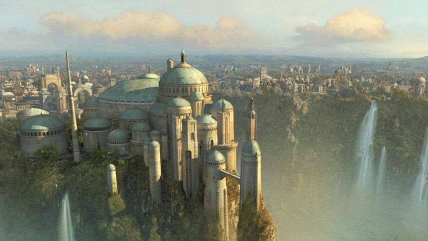
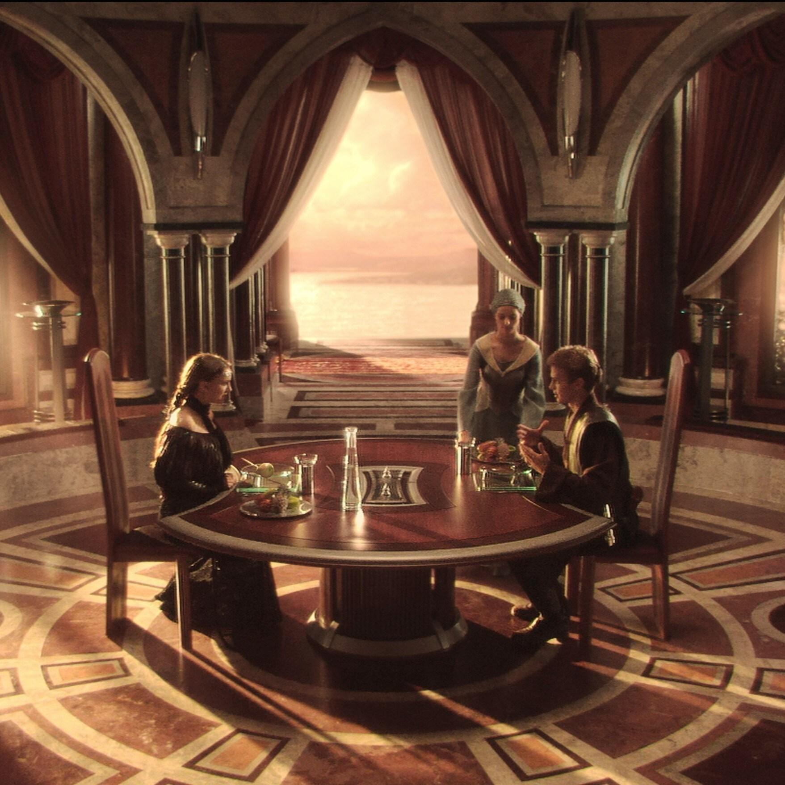
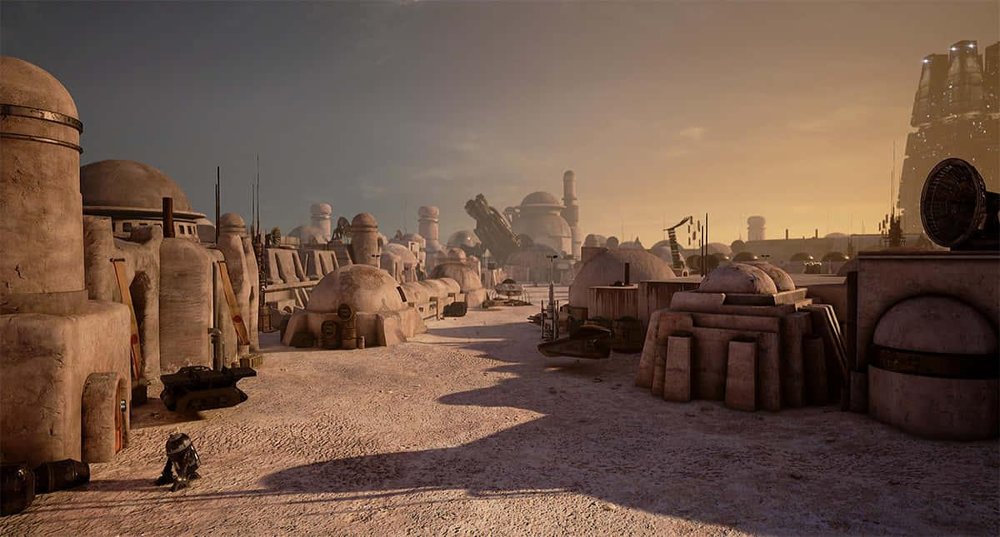
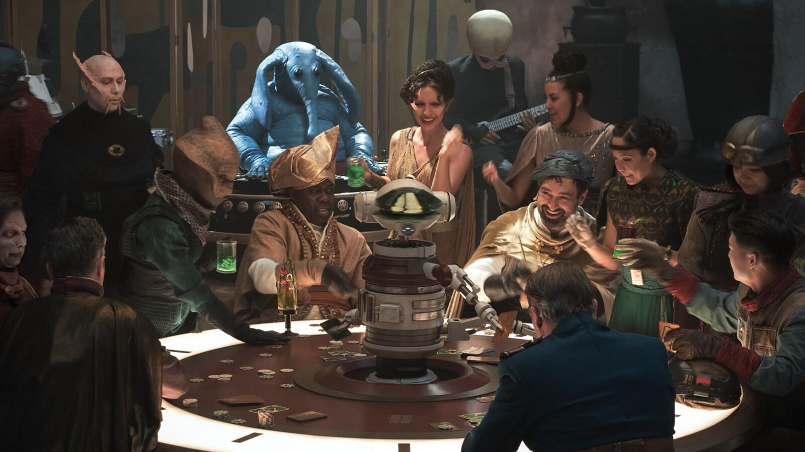
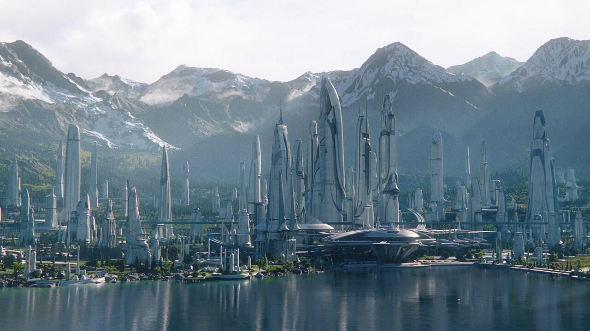
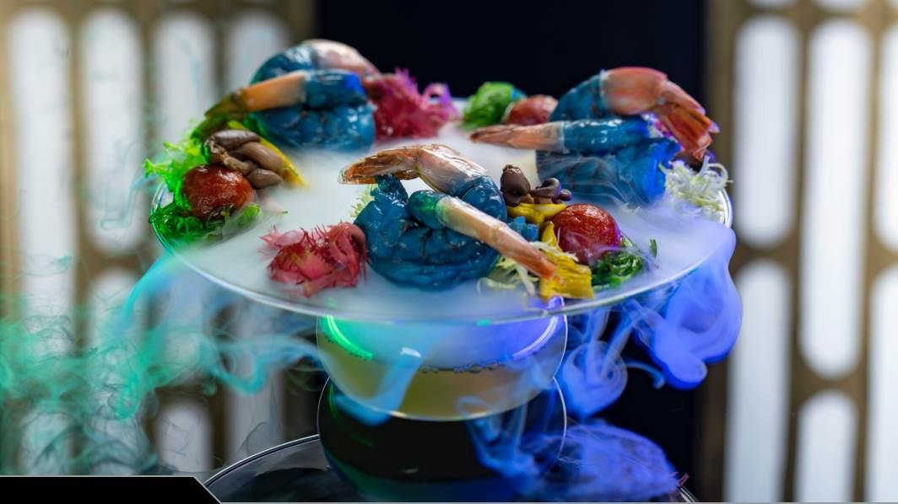
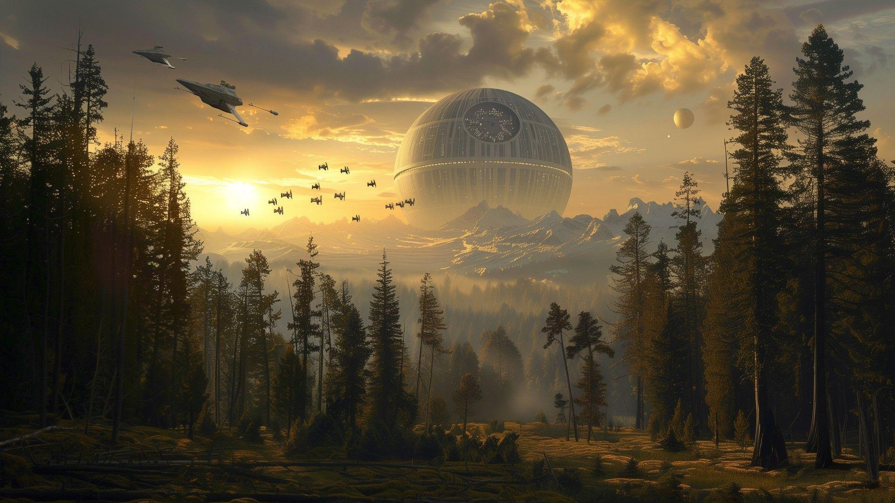

MY TRAVEL DIARY
銀河を巡る旅へ
今回の旅では、銀河系に存在する3つの惑星を訪れた。 美しい自然に囲まれたナブー、広大な砂漠が広がるタトゥイーン、 そして平和な自然と街並みが魅力のオルデラン。
それぞれの惑星には独自の文化や食事があり、 同じ銀河に存在しているとは思えないほど違った景色が広がっていた。 ここでは、旅先で撮影した風景や食事を紹介していきたい。
01 / FIRST DESTINATION
NABOO
水と緑に囲まれた美しい惑星

自然と建築が調和する美しい景色
最初に訪れたのは、緑豊かな自然と美しい湖で知られるナブー。 到着してまず驚いたのは、透き通った湖と周囲に広がる壮大な建築物だった。
特にシードの街並みは印象的で、建物の美しい曲線と自然の景色が 見事に調和していた。街を歩いているだけでも、時間を忘れてしまうほどだった。
ナブーでの食事

食事は見た目も美しく、素材の味を生かした上品な料理が印象的だった。 地元の食材を使った料理をゆっくりと楽しむことができた。
お気に入り：湖の景色とシードの街並み
感想：今回の旅で最も美しい景色の一つだった。
02 / SECOND DESTINATION
TATOOINE
果てしない砂漠が広がる惑星

砂漠の中に広がる街
次に訪れたのは、乾燥した砂漠が広がるタトゥイーン。 ナブーとはまったく異なる環境で、到着した瞬間から強い日差しと砂埃を感じた。
モス・アイズリーの街にはさまざまな種族が集まり、 独特の活気があった。酒場では異なる星から来た旅行者や商人の姿も見られ、 銀河の広さを改めて感じることができた。
タトゥイーンでの食事

現地の酒場で食事をしてみた。ナブーの料理とは違い、 素朴で力強い味付けが特徴的だった。 見慣れない料理も多かったが、それも旅行の楽しみの一つだと思う。
お気に入り：モス・アイズリーの酒場
感想：厳しい環境だが、活気に満ちた面白い惑星だった。
03 / THIRD DESTINATION
ALDERAAN
平和と自然に包まれた惑星

旅の最後を飾る美しい惑星
最後に訪れたのは、自然豊かなオルデラン。 美しい山々や湖が広がり、穏やかな空気に包まれた惑星だった。
都市の景観も非常に整っており、これまで訪れた惑星とはまた違った 落ち着いた雰囲気があった。自然と都市が共存する姿が特に印象に残っている。
オルデランでの食事

旅の最後ということもあり、少し贅沢な食事を楽しんだ。 盛り付けも美しく、落ち着いた雰囲気の中でゆっくりと食事ができた。
お気に入り：山々と湖が広がる自然の風景
感想：今回の旅を締めくくるのにふさわしい惑星だった。
THE LAST PHOTOGRAPH
旅の終わりに見たもの
オルデランで過ごしていたある日、空を見上げると、 そこには見たこともない巨大な人工物が浮かんでいた。

LOCATION : ALDERAAN
SUBJECT : UNKNOWN SPACE STATION
PHOTOGRAPH : FINAL DAY OF JOURNEY
THE END OF MY JOURNEY